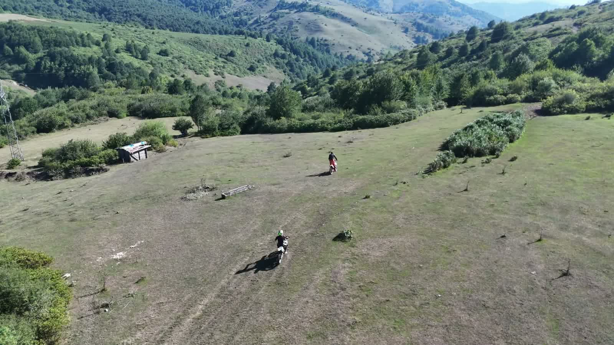
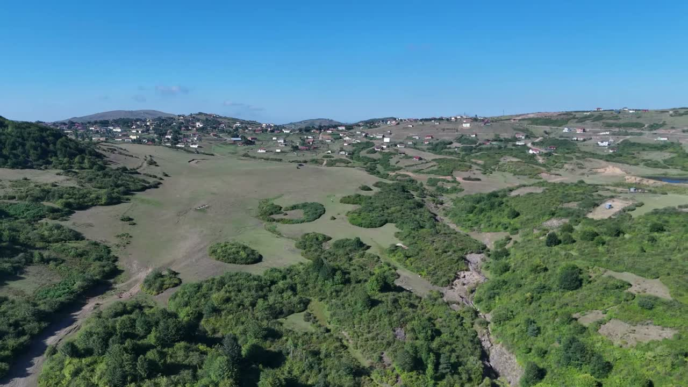

Into the Heart of Nature
Some places are best understood from above. Into the Heart of Nature is a two-minute flight from the high pastures of the Black Sea region down to the sea, stitched together from the landscapes we keep returning to.
It is the closest thing we have to a showreel: a handful of locations, one continuous mood and no words at all. The words are here instead.
/ In this story:
At a glance
- Length: 2 minutes 8 seconds
- Landscapes: Highland pasture, wetland, forest track, sea cliffs
- Also featured: Hoynat Island and Yason Church
- Narration: None
Two worlds, an hour apart
The eastern Black Sea coast is a narrow place. The mountains start almost at the waterline, and within a short drive the road climbs from sea level to open grassland above the tree line. Locals call these summer pastures yayla, and moving between the coast and the highlands with the seasons is one of the oldest habits of life here.
Ordu is known for them. The Perşembe Plateau in Aybastı, at around 1,500 metres, is famous for the stream that loops across it in tight meanders; Çambaşı, above Kabadüz, sits higher still at about 1,850 metres. The film is our attempt to hold both worlds, the pasture and the sea, in a single two-minute breath.

Up on the pastures
It opens on a highland wetland, where a shallow pond sits in the middle of open grassland. A flock of sheep moves along the water's edge in a single white line while the shepherd waits nearby. It is an ordinary moment, and from the air it looks like a painting.
Ponds like this one are the quiet engines of the highlands. They hold the snowmelt, water the herds through the summer and draw every living thing on the plateau toward them. From the ground you see reeds. From above you see the whole pattern: dark water, bright grass and the paths the animals have worn between them.
A person becomes a dot, a flock becomes a brushstroke. Scale is the story.
/ Parilti Media
Riders on the grass
The middle of the film belongs to a group of riders on motorbikes. The drone follows them across the pasture, drops in behind as they find a dirt track and stays with them as the track slips between the trees, with layer after layer of hills fading into haze beyond.
Following a moving subject is the hardest thing to do well with a drone. The trick is to match the speed and then forget the rider, and frame the landscape instead. A person becomes a dot, and the dot tells you how big everything else is.

Down to the sea
The second half leaves the highlands for the coast. Hoynat Island appears first, a lone rock in deep blue water, followed by the stone walls of Yason Church on its green headland above the waves.
Both places have films and stories of their own on this site. Here they work as the final chapter of a longer journey: from grass to rock to open water.
Why there are no words
There is no voice-over and no on-screen text in the film. The idea was to let scale carry the story. A flock becomes a brushstroke, a village becomes a scatter of roofs on a ridge, an island becomes a whole frame.
That change of scale is what drone cinematography does best, and it is the reason we started filming this region in the first place.

If you go
The highlands are at their greenest from late spring to early autumn, and the plateau festivals are held in July. Mornings are clear; by afternoon cloud often rolls up from the sea and fills the valleys, which is a spectacle in itself. Take a jacket even in August.
Sources & further reading
More
films
A Quiet Island in the Blue
Hoynat Island sits a hundred metres off the coast of Perşembe, Ordu. Nobody lives there except the seabirds, and that is exactly why it matters.
The Life of a Log: From Tree Cutting to Carpentry
From a hillside tree to boards on the sawmill floor: a two-minute woodworking journey that follows a single log through every pair of hands.
Jason Church (Yason Kilisesi), Ordu
A 19th-century stone church on the cape where Jason and the Argonauts are said to have come ashore. The history, the myth and the view from above.